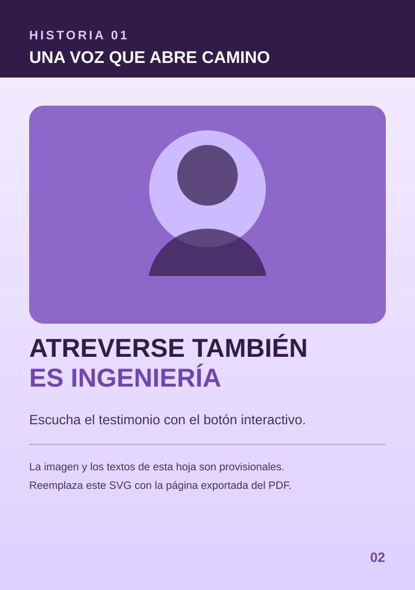
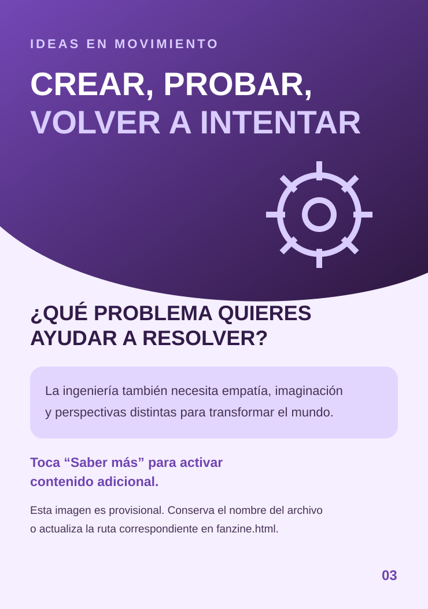

Historias que inspiran
Fanzine Digital Interactivo
Arrastra una esquina para curvar la hoja o usa las flechas.


No se pudo iniciar el visor local. Vuelve a cargar la página.
Historias que inspiran
Arrastra una esquina para curvar la hoja o usa las flechas.


No se pudo iniciar el visor local. Vuelve a cargar la página.